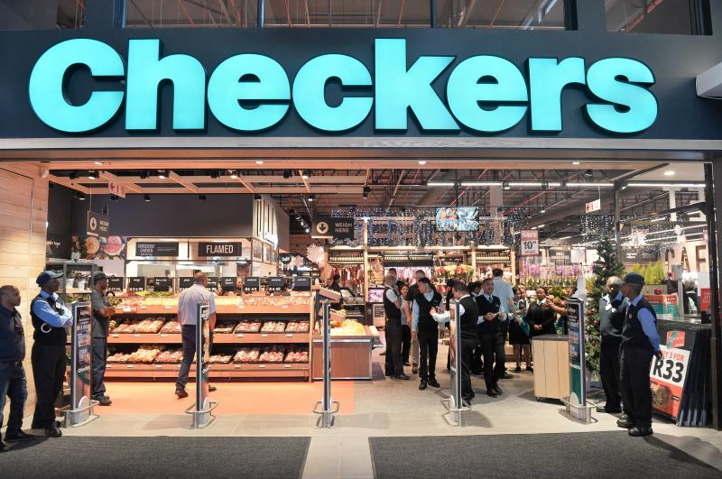

CHECKERS
Checkers forms a part of the larger Shoprite chain and has two divisions, Checkers and Checkers Hyper. Checkers is a smaller store than Checkers Hyper and doesn’t offer quite as much variety, but you will still find all the basic necessities at Checkers. This chain is all about allowing customers to live the lifestyle they want, without spending an arm and a leg to maintain it. They are affiliated with one of the biggest food retail groups in Africa and as a result they can offer quality products at low costs. They also cater to the hospitality and catering industry at wholesale prices